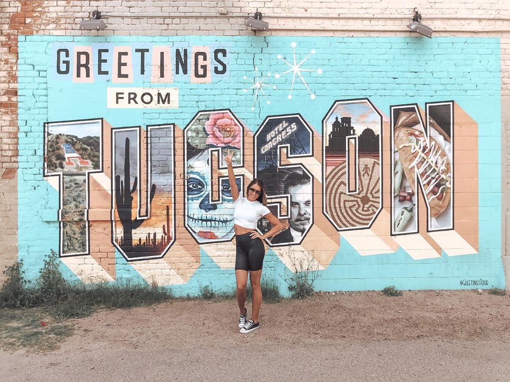
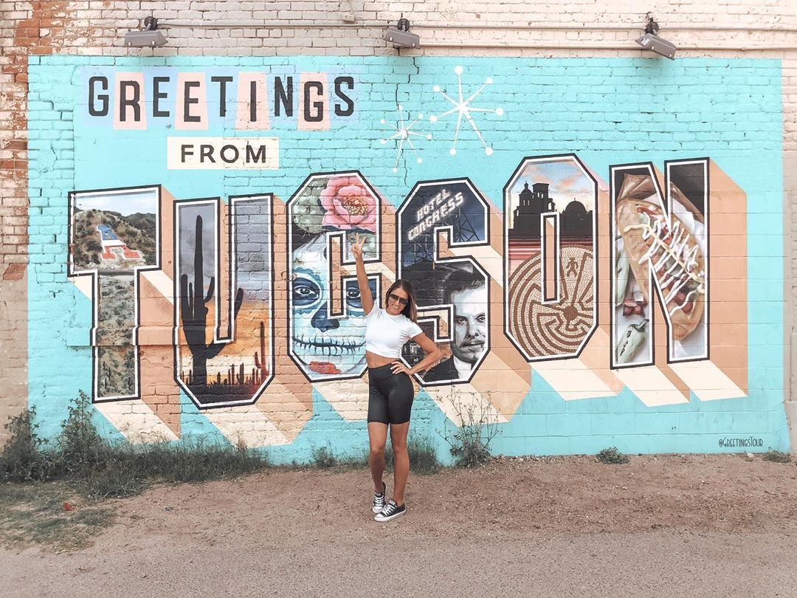

Welcome to the breathtaking state of Arizona, where natural wonders and vibrant culture collide to create an unforgettable experience! Explore the mesmerizing landscapes of the Grand Canyon, one of the world's most awe-inspiring wonders. As you stand at the edge of its majestic cliffs, you'll be captivated by the sheer size and beauty of this geological masterpiece. Arizona is also home to the stunning red rocks of Sedona, where you can embark on spiritual journeys, indulge in luxurious spa treatments, or simply revel in the stunning panoramic views.
Immerse yourself in the vibrant culture of Arizona's cities, such as Phoenix and Tucson. Discover a thriving arts scene, eclectic culinary delights, and a rich blend of Native American and Hispanic influences. Explore the Heard Museum in Phoenix, where you can delve into Native American art and history, or visit the Tucson Museum of Art, showcasing a diverse collection of contemporary and traditional works. Don't forget to sample the flavors of Arizona's Southwestern cuisine, with its bold spices and delicious fusion of flavors.
Adventure enthusiasts will find paradise in Arizona's diverse outdoor playground. From hiking and rock climbing in the rugged desert landscapes to white-water rafting in the exhilarating Colorado River, there's an activity for every thrill-seeker. Explore the otherworldly beauty of Antelope Canyon, where the sunbeams illuminate the narrow sandstone walls, creating a surreal atmosphere. For stargazers, head to Flagstaff, one of the world's best locations for astronomy, and witness the magic of a clear night sky filled with countless stars.
Unleash your spirit of adventure and discover the wonders of Arizona. With its breathtaking natural landscapes, vibrant cities, and endless outdoor pursuits, this southwestern gem promises an unforgettable journey. Whether you're seeking tranquility in nature or craving an invigorating urban experience, Arizona has it all. So, embark on your Arizona adventure today and create memories that will last a lifetime.
Phoenix
Discover the vibrant oasis of Phoenix, Arizona, where the sun-drenched landscapes and a bustling urban scene come together to create an unforgettable experience. Immerse yourself in the city's rich culture and heritage as you explore its world-class museums, such as the Heard Museum, which showcases the art and history of Native American tribes. Indulge your senses in the local culinary scene, boasting a fusion of Southwestern flavors and international cuisines, or sip on refreshing craft cocktails at trendy rooftop bars while soaking in breathtaking views of the desert cityscape.
Escape the ordinary and embark on outdoor adventures in Phoenix's surrounding natural wonders. Hike through the stunning trails of Camelback Mountain or paddleboard along the picturesque Salt River. With over 300 days of sunshine a year, Phoenix provides the perfect backdrop for outdoor enthusiasts to enjoy golfing, biking, and hot air balloon rides. For a unique desert experience, explore the Desert Botanical Garden, home to an incredible collection of desert flora and fauna, or take a scenic drive to the awe-inspiring red rocks of Sedona, just a short distance away.
Unleash your inner shopaholic in Phoenix's premier retail districts, including the upscale Biltmore Fashion Park and the sprawling Scottsdale Fashion Square. Indulge in a shopping spree at luxury boutiques, discover one-of-a-kind treasures at local artisan markets, or peruse art galleries showcasing works from talented local artists. Immerse yourself in the city's vibrant nightlife, where live music venues, trendy lounges, and energetic dance clubs offer endless entertainment options. Whether you seek a luxurious escape, an adventure in the great outdoors, or a cultural journey, Phoenix invites you to experience the best of the Southwest in a city like no other.
Mesa
Discover the vibrant city of Mesa, Arizona, where captivating adventures and endless possibilities await you. Nestled in the heart of the Sonoran Desert, Mesa offers a unique blend of natural beauty, cultural heritage, and modern amenities. Immerse yourself in the breathtaking landscapes as you hike through Usery Mountain Regional Park or explore the stunning rock formations of the Superstition Mountains. With over 300 days of sunshine per year, Mesa is the ultimate destination for outdoor enthusiasts, boasting world-class golf courses and a multitude of recreational activities.
Experience the rich history and cultural tapestry of Mesa as you step into the past at the Mesa Grande Ruins or wander through the exhibits at the Mesa Arts Center. Delve into the southwestern charm as you stroll along the charming streets of downtown Mesa, lined with vibrant art galleries, boutique shops, and delectable dining options. Don't miss the chance to immerse yourself in the local heritage at the Mesa Historical Museum, where fascinating exhibits narrate the city's journey from its early Native American roots to the present day.
Mesa is a true haven for food lovers, offering a diverse culinary scene that caters to all tastes. From farm-to-table eateries serving fresh, locally sourced ingredients to international flavors and trendy gastropubs, Mesa's dining options are sure to tantalize your taste buds. Savor mouthwatering Mexican dishes, indulge in succulent barbecue, or treat yourself to delectable desserts at one of the many celebrated restaurants. In addition, Mesa is home to numerous craft breweries and wineries, where you can sip on handcrafted beverages while enjoying the lively atmosphere.
Come and experience the allure of Mesa, Arizona, where natural wonders, cultural treasures, and culinary delights seamlessly blend together. Whether you seek outdoor adventures, cultural immersion, or a gastronomic journey, Mesa has something to offer every traveler. Plan your visit today and unlock unforgettable memories in this vibrant desert oasis.
Tuscon
Welcome to Tucson, Arizona, where vibrant culture meets stunning natural beauty! Nestled in the heart of the Sonoran Desert, Tucson offers an unforgettable experience for visitors seeking an escape like no other. Immerse yourself in the rich history and explore the enchanting adobe architecture of the Old Pueblo, while embracing the warmth of its welcoming community. With over 300 days of sunshine each year, Tucson is a haven for outdoor enthusiasts, boasting breathtaking landscapes, including the iconic Saguaro National Park and the majestic Catalina Mountains. Whether you're hiking through picturesque trails, indulging in delicious Southwestern cuisine, or stargazing at one of the world's premier observatories, Tucson is a destination that will captivate your soul and leave you yearning for more.
Prepare to awaken your senses in Tucson, where a vibrant culinary scene tantalizes taste buds with a fusion of flavors. From traditional Mexican street food to cutting-edge farm-to-table restaurants, Tucson is a food lover's paradise. Sample the bold spices and vibrant colors of authentic Sonoran cuisine, or savor a deliciously crafted craft beer from one of Tucson's local breweries. Don't forget to explore the bustling farmers' markets, overflowing with farm-fresh produce, handcrafted goods, and lively music. With a thriving arts community, Tucson also offers an array of galleries, museums, and theaters that showcase the city's creative spirit.
For adventure seekers, Tucson is a playground of thrilling activities. Immerse yourself in the wonders of the desert as you go off-roading through rugged landscapes, or embark on an exhilarating hot air balloon ride to witness the breathtaking vistas from above. Nature enthusiasts will be captivated by the diverse wildlife and stunning geological formations found in the region. Explore the hidden wonders of Kartchner Caverns, go birdwatching at the Patagonia-Sonoita Creek Preserve, or test your limits while rock climbing in the scenic Santa Catalina Mountains. Tucson's outdoor playground is sure to provide unforgettable experiences for every adventurer.
Come and discover the magic of Tucson, Arizona. With its vibrant culture, awe-inspiring landscapes, and endless opportunities for exploration, Tucson promises an experience that will leave you with memories to last a lifetime. Soak up the vibrant colors of a mesmerizing desert sunset, feel the energy of a city steeped in history, and find yourself in awe of the natural wonders that surround you. Whether you seek outdoor adventures, cultural immersion, or simply a tranquil escape, Tucson offers it all. Unearth the treasures of the desert and let Tucson cast its spell on you. Plan your visit today and let the adventure begin!
Yuma
Discover the hidden gem of the Southwest in Yuma, Arizona! Known as the "Sunniest City on Earth," Yuma offers a captivating blend of history, culture, and natural beauty. Step back in time at the historic Yuma Territorial Prison, a former prison turned museum, and learn about the fascinating stories of its inmates. Immerse yourself in the rich Native American heritage at the Quechan Indian Museum, where you can admire traditional crafts and artifacts. With over 350 days of sunshine each year, outdoor enthusiasts can indulge in activities like hiking, fishing, and boating along the majestic Colorado River. Whether you're seeking adventure, relaxation, or a cultural experience, Yuma has it all!
Experience a taste of the Old West in Yuma, Arizona. Picture yourself strolling down Main Street, lined with charming shops, restaurants, and art galleries. Savor authentic southwestern cuisine and indulge in the famous local specialty, the Yuma Medjool Date. Explore the historic downtown district, where you'll find beautifully preserved buildings from the 1800s, including the iconic Yuma Theatre. Unwind in the serene surroundings of the Gateway Park, offering breathtaking views of the river and picturesque sunsets. With a calendar full of lively festivals and events, Yuma's vibrant atmosphere will captivate you at every turn.
Make Yuma, Arizona your ultimate winter getaway destination. With its mild, sunny winters, Yuma attracts snowbirds from all over seeking a respite from the cold. Discover a wealth of RV parks and resorts that offer top-notch amenities and a friendly community atmosphere. Golf enthusiasts can tee off at one of the many championship courses, enjoying the stunning desert vistas as they play. Explore the nearby Imperial Sand Dunes, where you can experience the thrill of off-roading and sandboarding. Yuma's affordable cost of living, combined with its welcoming spirit and endless recreational opportunities, make it the perfect destination for a memorable and rejuvenating winter escape.
Bisbee
Welcome to Bisbee, Arizona, a hidden gem nestled in the picturesque Mule Mountains. Known for its eclectic charm and rich history, Bisbee offers an unforgettable experience for visitors of all kinds. Explore the town's vibrant art scene, wander through the narrow streets lined with colorful Victorian-era buildings, and immerse yourself in the warm and welcoming community. Whether you're an art enthusiast, history buff, or nature lover, Bisbee has something for everyone. Discover the captivating beauty of the Arizona desert while enjoying the unique blend of creativity, culture, and breathtaking landscapes that make Bisbee a must-visit destination.
Immerse yourself in Bisbee's rich history as you stroll through its well-preserved historic district. Once a booming mining town, Bisbee's past comes alive through its captivating architecture and fascinating museums. Step into the Copper Queen Mine and experience the life of a miner or explore the Bisbee Mining & Historical Museum to gain a deeper understanding of the town's mining heritage. Delve into the stories of the Old West at the Bisbee Restoration Museum, where you can witness the preserved remnants of the town's notorious past. History buffs will be enthralled by Bisbee's unique blend of frontier spirit and artistic charm.
For art enthusiasts, Bisbee is a haven of creativity. The town is home to a vibrant community of artists, boasting numerous galleries, studios, and workshops. Explore the Bisbee Art Museum, showcasing a diverse range of contemporary and traditional artworks, or take a leisurely walk through the monthly Bisbee ArtWalk, where you can meet local artists and witness their creative process firsthand. After a day of exploration, unwind at one of the cozy cafes, indulge in delicious cuisine at the town's charming restaurants, or savor a craft beer at one of the local breweries. Bisbee offers a unique and unforgettable experience that will leave you enchanted and longing to return.

 
